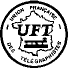

UFT:
Union Française des Télégraphistes (Franska unionen av telegrafister)
Telegrafiklubb i Frankrike.
Medlemmar måste ha kunskap i franska språket.
En stor del av alla franska telegrafivänner är medlemmar i UFT
som har en trevlig serie av aktiviteter inklusive en skriftlig bulletin
kallad "La Pioche"
[hackan? spettet? översättarens franskakunskaper är inte de bästa]
(på franska).